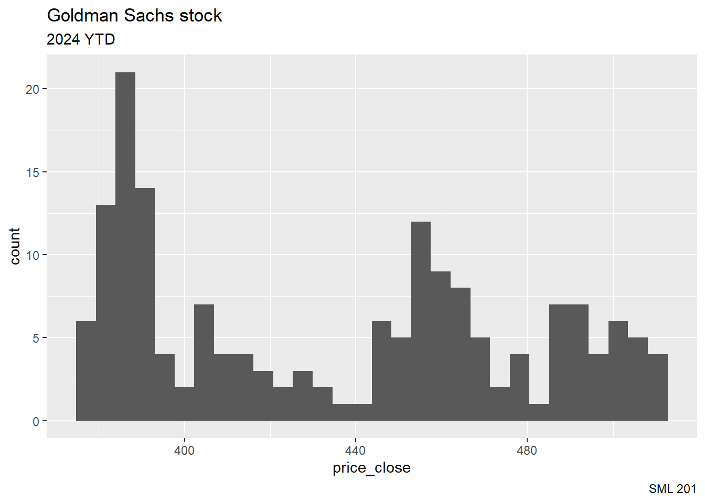

A <- seq(-3, 3)
B <- seq(-9, 9, by = 3)SML 201
Start
Goal: Introduce the concept of variance
Objective: Compute range, variance, and standard deviation
Simple Example
Consider the two sets below:
\[\begin{array}{rcl} A & = & \{-3, -2, -1, 0, 1, 2, 3\} \\ B & = & \{-9, -6, -3, 0, 3, 6, 9\} \\ \end{array}\]
We can create these sequences in R using the seq command.
Centrality
Recall that we can compute means and medians.
mean(A)[1] 0mean(B)[1] 0median(A)[1] 0median(B)[1] 0Visualization
simple_df <- data.frame(A,B)
title_string <- "Compare and Contrast: <span style='color:blue'>Set A</span> versus <span style='color:red'>Set B</span>"
simple_df |>
ggplot() +
geom_point(aes(x = A, y = 1), color = "blue", size = 10) +
geom_point(aes(x = B, y = 2), color = "red", size = 10) +
labs(title = title_string,
subtitle = "What is alike? What is different?",
caption = "SML 201",
x = "", y = "") +
theme_minimal() +
theme(axis.text.y = element_blank(),
plot.title = element_markdown(face = "bold", hjust = 0.5,size = 20),
plot.subtitle = element_markdown(hjust = 0.5,size = 15)) +
ylim(0,3)Definitions
Sample variance:
\[s^{2} = \frac{1}{n-1}\sum_{i=1}^{n} (x_{i} - \bar{x})^{2}\]
Sample standard deviation:
\[s = \sqrt{\frac{1}{n-1}\sum_{i=1}^{n} (x_{i} - \bar{x})^{2}}\]
where
- \(n\): sample size
- \(\bar{x}\): sample mean
Aside: Range
To describe variance, an early draft was the range
\[\text{range}(x) = \text{max}(x) - \text{min}(x)\]
- highly affected by outliers
- uses only two data points
# range in R computes min and max values
range(A)[1] -3 3range(B)[1] -9 9# range in statistics
diff(range(A))[1] 6diff(range(B))[1] 18Example: Hot Dogs
Each year on Independence Day in New York City’s Coney Island, Major League Eating hosts the annual Nathan’s Hot Dog Eating Contest. Contestants vie to eat the most hot dogs (and buns) within the 10-minute time frame. Here are recent results for the winners of the men’s contest over the past 5 years.
\[\{75,76,63,62,58\}\]
We will compute a sample variance and a sample standard deviation.
\[s^{2} = \frac{1}{n-1}\sum_{i=1}^{n} (x_{i} - \bar{x})^{2}\]

Sample Mean
Recall that we compute the sample mean of the data as
\[\bar{x} = \frac{1}{n}\sum_{i=1}^{n} x_{i}\]
H <- c(75,76,63,62,58)
xbar <- mean(H)Deviations
Next, we can compute deviations from the mean
deviations <- H - xbar
deviations[1] 8.2 9.2 -3.8 -4.8 -8.8Squared Deviations
We don’t need negative signs in this calculations. One way around this is to square the deviations.
sq_deviations <- deviations^2
sq_deviations[1] 67.24 84.64 14.44 23.04 77.44Tabulation
So far we have
| Nathan's Hot Dog Eating Contest | |||
|---|---|---|---|
| Recent winning amounts | |||
| hot_dogs | xbar | deviations | sq_deviations |
| 75 | 66.8 | 8.2 | 67.24 |
| 76 | 66.8 | 9.2 | 84.64 |
| 63 | 66.8 | -3.8 | 14.44 |
| 62 | 66.8 | -4.8 | 23.04 |
| 58 | 66.8 | -8.8 | 77.44 |
| Men's competition | |||
hot_dog_data <- data.frame(hot_dogs = c(75,76,63,62,58))
hot_dog_data |>
mutate(xbar = mean(hot_dogs, na.rm = TRUE),
deviations = hot_dogs - xbar,
sq_deviations = deviations^2) |>
gt() |>
cols_align(align = "center") |>
tab_footnote(footnote = "Men's competition") |>
tab_header(
title = "Nathan's Hot Dog Eating Contest",
subtitle = "Recent winning amounts") |>
tab_style(
style = cell_text(weight = "bold"),
locations = cells_column_labels()
)Summarizing
Like before, we want to summarize a list of numbers.
\[s^{2} = \frac{1}{n-1}\sum_{i=1}^{n} (x_{i} - \bar{x})^{2} = \frac{266.8}{4} = 66.7\]
At this point, the calculation has produced a sample variance
- Why “n-1”? See later session about “Estimators”
- But what are the units?
Dimensional Analysis
| Nathan's Hot Dog Eating Contest | |||
|---|---|---|---|
| Recent winning amounts | |||
| hot_dogs | xbar | deviations | sq_deviations |
| 75 | 66.8 | 8.2 | 67.24 (hot dogs)^2 |
| 76 | 66.8 | 9.2 | 84.64 (hot dogs)^2 |
| 63 | 66.8 | -3.8 | 14.44 (hot dogs)^2 |
| 62 | 66.8 | -4.8 | 23.04 (hot dogs)^2 |
| 58 | 66.8 | -8.8 | 77.44 (hot dogs)^2 |
| Men's competition | |||
hot_dog_data <- data.frame(hot_dogs = c(75,76,63,62,58))
hot_dog_data |>
mutate(xbar = mean(hot_dogs, na.rm = TRUE),
deviations = hot_dogs - xbar,
sq_deviations = paste(round(deviations^2,2),
"(hot dogs)^2")) |>
gt() |>
cols_align(align = "center") |>
tab_footnote(footnote = "Men's competition") |>
tab_header(
title = "Nathan's Hot Dog Eating Contest",
subtitle = "Recent winning amounts") |>
tab_style(
style = cell_text(weight = "bold"),
locations = cells_column_labels()
) |>
tab_style(
style = cell_text(color = "red"),
locations = cells_body(columns = sq_deviations)
)The sample variance is
\[s^{2} = 66.7 \,(\text{hot dogs})^{2}\]
- image created with Canva AI
Rectify
If we need to use these results in subsequent calculations, we can fix the units by taking the square root of the sample variance. This yields the sample standard deviation
\[s = \sqrt{66.7} \approx 8.1670 \text{ hot dogs}\]
Simple Example Revisited
var(A)[1] 4.666667var(B)[1] 42Set B has more variance than set A
sd(A)[1] 2.160247sd(B)[1] 6.480741Set B has more variance than set A
simple_df <- data.frame(A,B)
title_string <- "<span style='color:blue'>Set A</span> versus <span style='color:red'>Set B</span>"
subtitle_string <- "<span style='color:blue'>SD(A) = 2.1602</span>, <span style='color:red'>SD(B) = 6.4807</span>"
simple_df |>
ggplot() +
geom_point(aes(x = A, y = 1), color = "blue", size = 10) +
geom_point(aes(x = B, y = 2), color = "red", size = 10) +
labs(title = title_string,
subtitle = subtitle_string,
caption = "SML 201",
x = "", y = "") +
theme_minimal() +
theme(axis.text.y = element_blank(),
plot.title = element_markdown(face = "bold", hjust = 0.5,size = 25),
plot.subtitle = element_markdown(hjust = 0.5,size = 20)) +
ylim(0,3)Z-Scores
One way to rescale or standardize data is to use \(z\)-scores
\[z = \frac{x - \bar{x}}{s}\]
- \(\bar{x}\): sample mean
- \(s\): sample standard deviation
- Units? Number of standard deviations above/below the mean
- Intuition: about 95% of data falls within two standard deviations of the mean
Example: Ledecky Swimming
In the 2024 Summer Olympic games, US swimmer Katie Ledecky won 4 medals, including gold in
- 800 m freestyle
- 1500 m freestyle
Which winning time was more impressive?
Here is a small data set of the times from the final meets of those two events (times in seconds).
Ledecky_df <- data.frame(
place = c(1, 2, 3, 4, 5, 6, 7, 8),
times800 = c(491, 492, 493, 495, 498, 502, 503, 503),
times1500 = c(930, 941, 941, 944, 961, 963, 964, 973))xbar <- mean(Ledecky_df$times800)
s <- sd(Ledecky_df$times800)
z1 <- (491 - xbar) / s\[z_{1} \approx -1.21\]
Ledecky’s 800 m time was about 1.21 standard deviations below the mean.
xbar <- mean(Ledecky_df$times1500)
s <- sd(Ledecky_df$times1500)
z2 <- (930 - xbar) / s\[z_{2} \approx -1.47\]
Ledecky’s 800 m time was about 1.47 standard deviations below the mean.
According to these rescaled calculations, Ledecky’s 1500 m time was more impressive.
Side Quest: Minimizing Error
SSE
For the sum of squared errors, what value of \(c\) will minimize the error?
\[\text{SSE} = \sum_{i=1}^{n} (x_{i} - c)^{2}, \quad H = \{75,76,63,62,58\}\]
cvals <- seq(58, 76)
SSE <- rep(NA, length(cvals))
for(i in 1:length(cvals)){
SSE[i] <- sum((H - cvals[i])^{2})
}
min(SSE)[1] 267cvals[which.min(SSE)][1] 67cvals <- seq(58, 76, by = 0.1)
SSE <- rep(NA, length(cvals))
for(i in 1:length(cvals)){
SSE[i] <- sum((H - cvals[i])^{2})
}
min(SSE)[1] 266.8cvals[which.min(SSE)][1] 66.8mean(H)[1] 66.8Claim: The sample mean minimizes the sum of squared errors.
(optional) Calculus proof
For a non-constant data set \(\{x_{i}\}_{i=1}^{n}\), and for the sum of squared errors
\[S(c) = \sum_{i=1}^{n} (x_{i} - c)^{2}\]
we can set the derivative equal to zero
\[\begin{array}{rcl} 0 & = & \frac{dS}{dc} \\ 0 & = & \frac{d}{dc} \sum_{i=1}^{n} (x_{i} - c)^{2} \\ 0 & = & \sum_{i=1}^{n} \frac{d}{dc} (x_{i} - c)^{2} \\ 0 & = & \sum_{i=1}^{n} 2(x_{i} - c) \\ 0 & = & 2\sum_{i=1}^{n} x_{i} - 2nc \\ 0 & = & \sum_{i=1}^{n} x_{i} - nc \\ nc & = & \sum_{i=1}^{n} x_{i} \\ c & = & \frac{1}{n}\sum_{i=1}^{n} x_{i} \\ \end{array}\]
We recognize that the right-hand side is the sample mean. Since the function was a concave up parabola, we know that this critical point is a global minimum.
Absolute Value
What if we had used the absolute value instead? We can use a similar argument on the sum of absolute errors.
cvals <- seq(58, 76, by = 0.1)
SE <- rep(NA, length(cvals))
for(i in 1:length(cvals)){
SE[i] <- sum(abs(H - cvals[i]))
}
min(SE)[1] 31cvals[which.min(SE)][1] 63median(H)[1] 63Claim: The sample median minimizes the sum of absolute errors.
\[SE(c) = \sum_{i=1}^{n} |x_{i} - c|\]
(optional) Outline of proof
- argue that the summation is smallest when one of terms is zero
- interpolate for the case when the number of observations is even
Case Study: Stock Volatility
In many financial applications, the volatility of a price is the standard deviation.

Data: Dow Jones Industrial Average
30 popular stocks
Year to date
- Jan 2, 2024
- Sept 6, 2024
source: Yahoo Finance
dow_df <- readr::read_csv("https://raw.githubusercontent.com/dsollberger/sml201slides/main/posts/03_variance/DOW30.csv")Exploration
head(dow_df)# A tibble: 6 × 11
ticker ref_date price_open price_high price_low price_close volume
<chr> <date> <dbl> <dbl> <dbl> <dbl> <dbl>
1 AAPL 2024-01-02 187. 188. 184. 186. 82488700
2 AAPL 2024-01-03 184. 186. 183. 184. 58414500
3 AAPL 2024-01-04 182. 183. 181. 182. 71983600
4 AAPL 2024-01-05 182. 183. 180. 181. 62303300
5 AAPL 2024-01-08 182. 186. 182. 186. 59144500
6 AAPL 2024-01-09 184. 185. 183. 185. 42841800
# ℹ 4 more variables: price_adjusted <dbl>, ret_adjusted_prices <dbl>,
# ret_closing_prices <dbl>, cumret_adjusted_prices <dbl>str(dow_df, give.attr = FALSE)spc_tbl_ [5,160 × 11] (S3: spec_tbl_df/tbl_df/tbl/data.frame)
$ ticker : chr [1:5160] "AAPL" "AAPL" "AAPL" "AAPL" ...
$ ref_date : Date[1:5160], format: "2024-01-02" "2024-01-03" ...
$ price_open : num [1:5160] 187 184 182 182 182 ...
$ price_high : num [1:5160] 188 186 183 183 186 ...
$ price_low : num [1:5160] 184 183 181 180 182 ...
$ price_close : num [1:5160] 186 184 182 181 186 ...
$ volume : num [1:5160] 82488700 58414500 71983600 62303300 59144500 ...
$ price_adjusted : num [1:5160] 185 184 181 180 185 ...
$ ret_adjusted_prices : num [1:5160] NA -0.00749 -0.0127 -0.00401 0.02417 ...
$ ret_closing_prices : num [1:5160] NA -0.00749 -0.0127 -0.00401 0.02417 ...
$ cumret_adjusted_prices: num [1:5160] 1 0.993 0.98 0.976 1 ...colnames(dow_df) [1] "ticker" "ref_date" "price_open"
[4] "price_high" "price_low" "price_close"
[7] "volume" "price_adjusted" "ret_adjusted_prices"
[10] "ret_closing_prices" "cumret_adjusted_prices"Which Stocks?
The table command tallys the observations in a categorical variable.
table(dow_df$ticker)
AAPL AMGN AMZN AXP BA CAT CRM CSCO CVX DIS DOW GS HD HON IBM INTC
172 172 172 172 172 172 172 172 172 172 172 172 172 172 172 172
JNJ JPM KO MCD MMM MRK MSFT NKE PG TRV UNH V VZ WMT
172 172 172 172 172 172 172 172 172 172 172 172 172 172 Histograms
dow_df |>
filter(ticker == "VZ") |>
ggplot(aes(x = price_close)) +
geom_histogram() +
labs(title = "Verizon stock",
subtitle = "2024 YTD",
caption = "SML 201")`stat_bin()` using `bins = 30`. Pick better value with `binwidth`.dow_df |>
filter(ticker == "GS") |>
ggplot(aes(x = price_close)) +
geom_histogram() +
labs(title = "Goldman Sachs stock",
subtitle = "2024 YTD",
caption = "SML 201")`stat_bin()` using `bins = 30`. Pick better value with `binwidth`.
Z-scores
Sometimes, we want to rescale numerical columns to be able to compare them together.
summary(dow_df$price_close) Min. 1st Qu. Median Mean 3rd Qu. Max.
18.89 96.86 181.35 198.37 271.92 604.18 dow_df <- dow_df |>
mutate(price_scaled = scale(price_close)) #z-scoressummary(dow_df$price_scaled) V1
Min. :-1.4525
1st Qu.:-0.8215
Median :-0.1377
Mean : 0.0000
3rd Qu.: 0.5953
Max. : 3.2842 Application 1
Which stocks have had the highest average price_close this year?
dow_df |>
group_by(ticker) |>
mutate(avg_price = mean(price_close, na.rm = TRUE)) |>
ungroup() |>
select(ticker, avg_price) |>
distinct() |>
arrange(desc(avg_price))# A tibble: 30 × 2
ticker avg_price
<chr> <dbl>
1 UNH 516.
2 GS 435.
3 MSFT 417.
4 HD 354.
5 CAT 335.
6 AMGN 302.
7 MCD 275.
8 V 273.
9 CRM 271.
10 AXP 227.
# ℹ 20 more rows- United Health
- Goldman Sachs
- Microsoft
- Home Depot
- Caterpillar
Volatility
Which stocks have been the most volatile this year?
dow_df |>
group_by(ticker) |>
mutate(volatility = sd(price_close, na.rm = TRUE)) |>
ungroup() |>
select(ticker, volatility) |>
distinct() |>
arrange(desc(volatility))# A tibble: 30 × 2
ticker volatility
<chr> <dbl>
1 GS 43.5
2 UNH 37.5
3 CRM 22.2
4 CAT 21.9
5 AMGN 21.3
6 AAPL 20.8
7 MSFT 19.5
8 AXP 18.9
9 BA 17.5
10 MMM 16.2
# ℹ 20 more rows- Goldman Sachs
- United Health
- Salesforce
- Caterpillar
- Amgen
Which stocks have been the most volatile this year?
dow_df |>
group_by(ticker) |>
mutate(volatility = sd(price_close, na.rm = TRUE)) |>
ungroup() |>
select(ticker, volatility) |>
distinct() |>
arrange(volatility)# A tibble: 30 × 2
ticker volatility
<chr> <dbl>
1 VZ 0.973
2 CSCO 1.73
3 DOW 2.29
4 KO 3.58
5 MRK 5.56
6 PG 6.23
7 JNJ 6.23
8 CVX 6.24
9 WMT 6.47
10 HON 6.56
# ℹ 20 more rows- Verizon
- Cisco
- Dow Inc
- Coca-Cola
- Merck
Line Plots
title_string <- "<span style='color:blue'>Verizon</span> and <span style='color:red'>Goldman Sachs</span>"
subtitle_string <- "2024 stock prices"
dow_df |>
ggplot() +
geom_line(aes(x = ref_date, y = price_close),
color = "blue", linewidth = 2,
data = dow_df |> filter(ticker == "VZ")) +
geom_line(aes(x = ref_date, y = price_close),
color = "red", linewidth = 3,
data = dow_df |> filter(ticker == "GS")) +
labs(title = title_string,
subtitle = subtitle_string,
caption = "SML 201",
x = "date", y = "closing price") +
theme_minimal() +
theme(plot.title = element_markdown(face = "bold", hjust = 0.5,size = 25),
plot.subtitle = element_markdown(hjust = 0.5,size = 20))Coefficient of Variation
Wouldn’t the most expensive stocks naturally vary more?
\[\text{CoV} = \frac{s}{\bar{x}}\]
- \(\bar{x}\): sample mean
- \(s\): sample standard deviation
Which stocks have the highest coefficients of variation this year?
dow_df |>
group_by(ticker) |>
mutate(avg_price = mean(price_close, na.rm = TRUE)) |>
mutate(volatility = sd(price_close, na.rm = TRUE)) |>
ungroup() |>
select(ticker, avg_price, volatility) |>
distinct() |>
mutate(coef_var = volatility / avg_price) |>
arrange(desc(coef_var))# A tibble: 30 × 4
ticker avg_price volatility coef_var
<chr> <dbl> <dbl> <dbl>
1 INTC 35.1 8.58 0.244
2 MMM 98.2 16.2 0.165
3 NKE 91.6 10.6 0.115
4 AAPL 195. 20.8 0.106
5 WMT 63.3 6.47 0.102
6 GS 435. 43.5 0.100
7 DIS 102. 9.92 0.0971
8 BA 187. 17.5 0.0934
9 AXP 227. 18.9 0.0833
10 CRM 271. 22.2 0.0819
# ℹ 20 more rows- Intel
- 3M
- Nike
- Apple
- Walmart
Precept 2
TV show scripts from
schrutepackage3 measurements of sentiment analysis
syuzhetsentimentrsentimentAnalysis
areas: media arts, linguistics


Can we measure cringe?
Quo Vadimus?
Assignments:
- Precept 2
- Group Membership
- BLT0912
Project 1:
- assigned: Sept 23
- due: Oct 2
Exam 1: Oct 10

- image source: Netflix
Footnotes
(optional) How the data set was obtained
If you want to download stock market data, this code chunk is a good start.
library("yfR")
today <- Sys.Date()
start_date <- "2024-01-01"
stock_market_example <- yf_collection_get(collection = "SP500",
first_date = start_date,
last_date = today)
(optional) Additional Resources
Session Info
sessionInfo()R version 4.4.1 (2024-06-14 ucrt)
Platform: x86_64-w64-mingw32/x64
Running under: Windows 11 x64 (build 22631)
Matrix products: default
locale:
[1] LC_COLLATE=English_United States.utf8
[2] LC_CTYPE=English_United States.utf8
[3] LC_MONETARY=English_United States.utf8
[4] LC_NUMERIC=C
[5] LC_TIME=English_United States.utf8
time zone: America/New_York
tzcode source: internal
attached base packages:
[1] stats graphics grDevices utils datasets methods base
other attached packages:
[1] lubridate_1.9.3 forcats_1.0.0 stringr_1.5.1 dplyr_1.1.4
[5] purrr_1.0.2 readr_2.1.5 tidyr_1.3.1 tibble_3.2.1
[9] ggplot2_3.5.1 tidyverse_2.0.0 gt_0.11.0 ggtext_0.1.2
loaded via a namespace (and not attached):
[1] sass_0.4.9 utf8_1.2.4 generics_0.1.3 xml2_1.3.6
[5] stringi_1.8.4 hms_1.1.3 digest_0.6.36 magrittr_2.0.3
[9] evaluate_0.24.0 grid_4.4.1 timechange_0.3.0 fastmap_1.2.0
[13] jsonlite_1.8.8 fansi_1.0.6 scales_1.3.0 cli_3.6.3
[17] rlang_1.1.4 crayon_1.5.3 commonmark_1.9.1 bit64_4.0.5
[21] munsell_0.5.1 withr_3.0.1 yaml_2.3.10 tools_4.4.1
[25] parallel_4.4.1 tzdb_0.4.0 colorspace_2.1-1 curl_5.2.1
[29] vctrs_0.6.5 R6_2.5.1 lifecycle_1.0.4 htmlwidgets_1.6.4
[33] bit_4.0.5 vroom_1.6.5 archive_1.1.8 pkgconfig_2.0.3
[37] pillar_1.9.0 gtable_0.3.5 glue_1.7.0 Rcpp_1.0.13
[41] xfun_0.46 tidyselect_1.2.1 rstudioapi_0.16.0 knitr_1.48
[45] farver_2.1.2 htmltools_0.5.8.1 labeling_0.4.3 rmarkdown_2.28
[49] compiler_4.4.1 markdown_1.13 gridtext_0.1.5